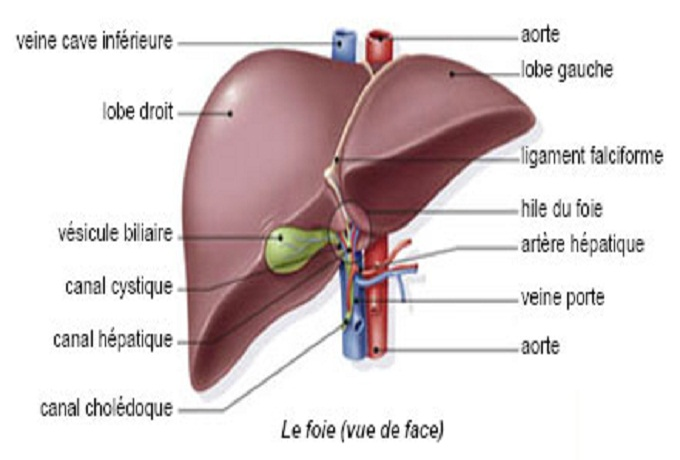

La biopsie hepatique
Definition
Indications
Contre-indications
Materiel
Realisation du soin
Risques et
complications
Surveillances et
evaluations
Definition
La
biopsie hepatique consiste e prelever un fragment de foie au moyen
d'une aiguille fine, introduite e travers la peau, apres une anesthesie
locale.

Cadre legislatif
- Pose relevant d'un acte medical, rele
infirmier de collaboration : art. R.4311-10 decret 2004-802 du
29/07/2004.
- Surveillance relevant du rele propre
infirmier : art. R. 4311-5 decret 2004-802 du 29/07/2004.
Indications
- Maladie alcoolique.
- Hepatite chronique : virale ou
auto-immune.
- Anomalie biologique inexpliquee.
- Foie en surcharge (hemochromatose :
surcharge en fer).
- Neoplasie primitive ou secondaire.
Contre-indications
- Troubles de la coagulation.
- Obstacles sur les voies biliaires
principales.
- Kystes parasitaire ou tumeur
hyper-vascularisee.
- Ascite.
- Angiomes (tumeur benigne richement
vascularise).
Materiel
- Materiel
pour la biopsie :
- Kit de biopsie avec aiguille speciale.
- Champ fenetre sterile.
- Champ de table sterile.
- Compresses steriles.
- Produits pour l’antisepsie :
- Respecter les memes gammes de produit :
polyvidone iodee ou
chlorexidine.
- Savon antiseptique.
- Serum physiologique ou eau sterile.
- Antiseptique dermique.
- Pansement occlusif.
- Materiel
pour l'anesthesie locale :
- Anesthesique local : lidocaene 1%
(Xylocaenee).
- Seringue de 10 mL.
- Aiguille pompeuse (rose : 18 Gauge).
- Aiguille intramusculaire (noir : 22
Gauge ; verte : 21 Gauge).
- Materiel
pour l'habillage :
- Tenue du medecin :
- Casaque sterile.
- Gants steriles e usage unique.
- Bavette.
- Charlotte.
- Tenue de l'infirmier :
- Bavette.
- Charlotte.
- Gants non steriles e usage unique.
- Tenue du patient :
- Chemise de bloc operatoire.
- Materiel
divers :
- Tondeuse.
- Reniforme (haricot).
- Sac e elimination des dechets papier et
materiel non contamine.
- Sac e elimination des
dechets d'activites de soins e risques infectieux.
- Conteneur e dechets contamines piquants
et tranchants.
- Desinfectant de surface et chiffonnette.
- Necessaire e l'hygiene des mains.
Realisation
du soin
Preparation et installation
- Bilan de l'hemostase : TP (>50 –
60 %) ; Plaquette (>70000) ; TCA.
- NFS, rhesus, RAI.
- Echographie abdominale recente.
- Radiographie pulmonaire et E.C.G. si
antecedent pulmonaire ou cardiaque.
- Prise des parametres : pouls, tension
arterielle, temperature.
- Patient e jeun.
- Appliquer la prescription medicale.
- Rassurer, expliquer le deroulement de
l'examen : dure environ 15 min, la ponction 3 minutes.
- Patient en chemise de bloc operatoire.
- Installer le patient en decubitus
dorsal, les mains sous la tete.
- Si
besoin, depiler la zone de ponction avec une tondeuse ou aux ciseaux,
mais ne pas raser.
La
depilation doit toujours etre realisee dans le sens du poils pour
eviter les folliculites.
- Effectuer un lavage antiseptique des
mains ou
effectuer un traitement hygienique des mains par frictions avec une
solution hydro-alcoolique : hygiene
des mains.
- Pratiquer une antisepsie de la peau en 4
temps :
- Ne jamais repasser e un meme endroit.
- Utiliser une compresse par passage puis
la jeter dans le sac e dechets
contamines.
- Respecter le temps de contact de
l'antiseptique.
- Nettoyer avec le savon antiseptique.
- Rincer avec le serum physiologique ou
l'eau sterile.
- Secher avec des compresses steriles
seches.
- Appliquer l'antiseptique dermique.
Aide e la realisation de l'examen
- Effectuer un lavage antiseptique des
mains ou
effectuer un traitement hygienique des mains par frictions avec une
solution hydro-alcoolique : hygiene
des mains.
- Aider le medecin operateur e l’habillage
sterile.
- Installer le champ sterile de table avec
l'aide du medecin si necessaire.
- Servir le medecin operateur sterilement
:
- Repere du point de ponction.
- Anesthesie locale.
- Realisation de la ponction par le
medecin operateur.
- Realisation d'un pansement compressif.
- Eliminer les dechets contamines et
desinfecter le materiel utilise
ainsi que le plan de travail.
- Effectuer un lavage simple des mains ou
effectuer un traitement hygienique des mains par frictions avec une
solution hydro-alcoolique : hygiene
des mains.
- Verifier la concordance des etiquettes
et de l'identite du patient puis etiqueter les flacons, remplir les
bons
d'analyse et acheminer les flacons au laboratoire
d'analyse immediatement puisque le LCR est sensible au germe
meningococcique.
- Transmission : site de ponction,
reaction du patient,
accidents,
complications.
Risques
et complications
- Hemorragie : hemothorax.
- Pneumothorax (lors de l'introduction de
l'aiguille, penetration d'air).
- Infection.
Surveillances
et evaluations
- Position en decubitus lateral droit
strict pendant 4 e 6 heures. Ceci permet de comprimer le point de
ponction et eviter une hemorragie.
- Lever le lendemain.
- Vessie de glace locale et antalgique sur
prescription medicale si presence de douleur thoracique ou abdominale
violente.
- Surveillance hemodynamique : pouls,
tension arterielle.
- Surveiller la respiration toutes des e
heures pendant 2 heures, puis toutes les heures pendant 6 heures.
- Surveillance de la temperature pour
prevenir d'une eventuelle infection.
- Surveillance de l'etat du pansement.
- Alimentation possible apres 2 heures.
- Eviter les efforts physiques violents
pendant une semaine.
Voir aussi :

 haut
de page
haut
de page